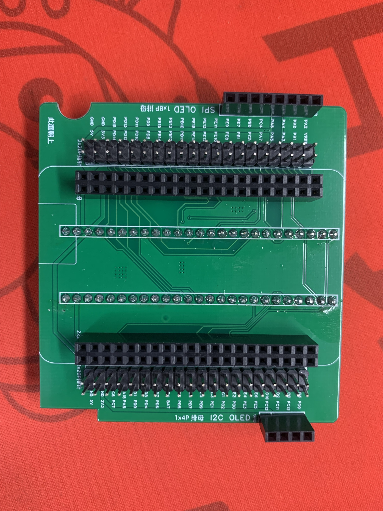
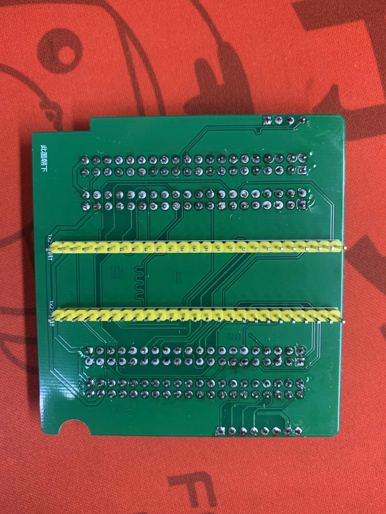
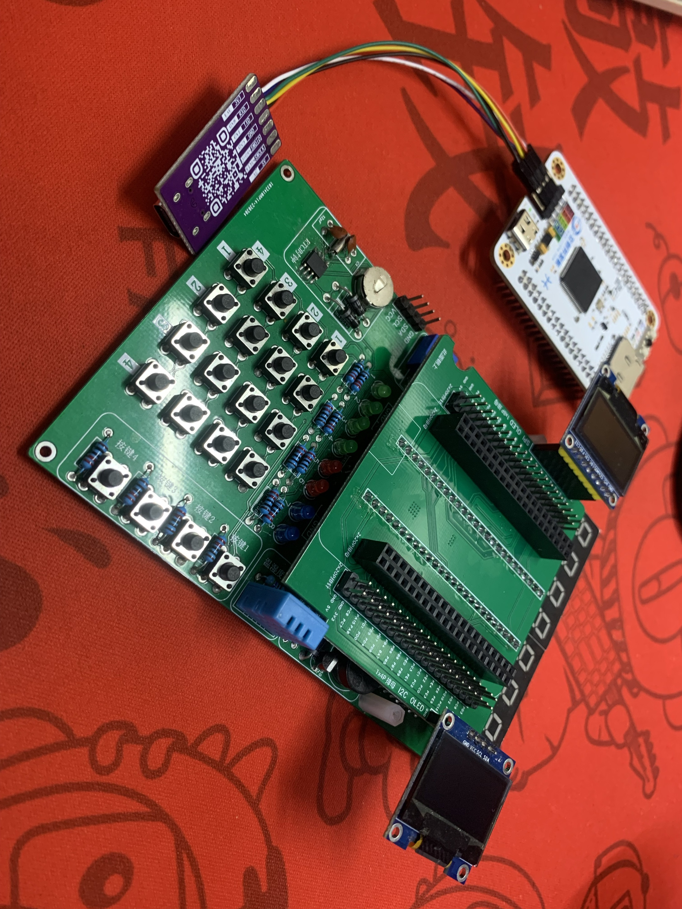
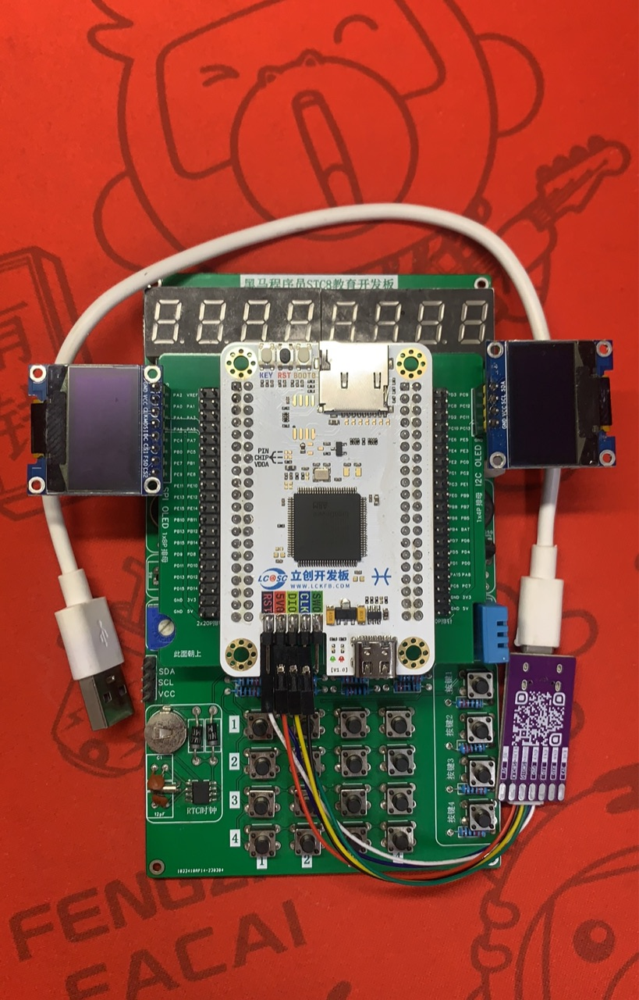
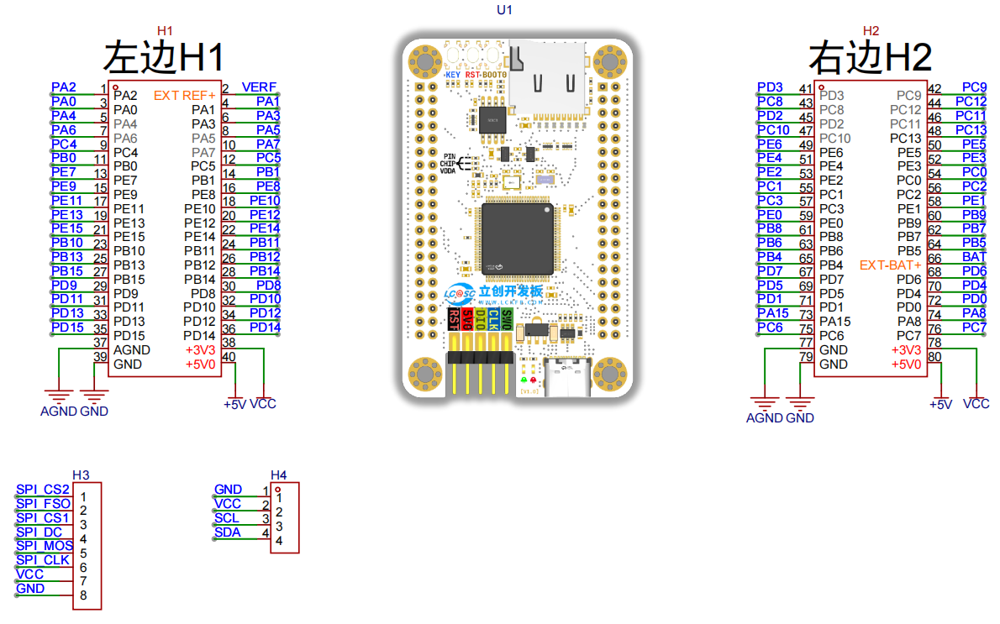
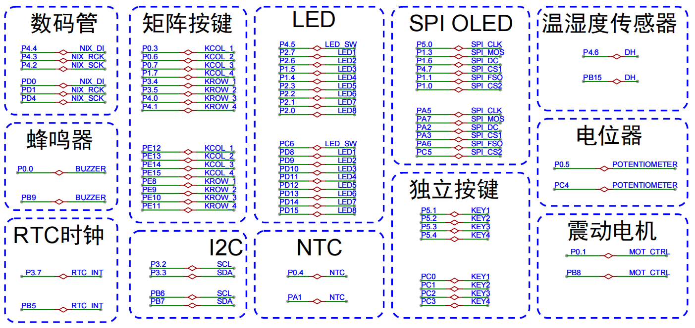

<!DOCTYPE lake>
<h2 data-lake-id="Wrckg" id="Wrckg"><span data-lake-id="u539b0168" id="u539b0168">焊接效果图</span></h2><p data-lake-id="u4144d337" id="u4144d337"><br/></p><p data-lake-id="u09477642" id="u09477642"></p><p data-lake-id="ue58dd4c9" id="ue58dd4c9"><br/></p><p data-lake-id="uda77144d" id="uda77144d"><span data-lake-id="ud9880789" id="ud9880789">按照以上图例进行焊接，认真看丝印描述，注意严格遵守焊接方向。</span></p><blockquote class="lake-alert lake-alert-danger" data-lake-id="ud5ba1b7c" id="ud5ba1b7c"><p data-lake-id="u6d5cbebd" id="u6d5cbebd"><strong><span data-lake-id="ufd7de0bf" id="ufd7de0bf">注意：</span></strong></p><ol list="ud5a072a4"><li data-lake-id="u4e93d89f" fid="ue167c647" id="u4e93d89f"><span data-lake-id="u5d14edb2" id="u5d14edb2">先焊接</span><strong><span data-lake-id="ufdb37616" id="ufdb37616" style="color: #DF2A3F">反面</span></strong><span data-lake-id="u563e5537" id="u563e5537">内侧的两根1x25的排针，注意方向</span><strong><span data-lake-id="uef37f73f" id="uef37f73f" style="color: #DF2A3F">朝下</span></strong></li><li data-lake-id="ub72f20ad" fid="ue167c647" id="ub72f20ad"><span data-lake-id="u2b88cea6" id="u2b88cea6">然后焊</span><strong><span data-lake-id="uf2f226ff" id="uf2f226ff">正面</span></strong><span data-lake-id="u7af8b479" id="u7af8b479">中间的2x20的排母，注意方向</span><strong><span data-lake-id="ucc7b5564" id="ucc7b5564">朝上</span></strong></li><li data-lake-id="ub9d91614" fid="ue167c647" id="ub9d91614"><span data-lake-id="u473e3bd9" id="u473e3bd9">接着焊</span><strong><span data-lake-id="ufd8713e6" id="ufd8713e6">正面</span></strong><span data-lake-id="u9903060b" id="u9903060b">两侧的2x20的排针，注意方向</span><strong><span data-lake-id="ue791c634" id="ue791c634">朝上</span></strong></li><li data-lake-id="uc484c2ae" fid="ue167c647" id="uc484c2ae"><span data-lake-id="ubf461a65" id="ubf461a65">最后焊</span><strong><span data-lake-id="ubc6976ad" id="ubc6976ad">正面</span></strong><span data-lake-id="u1442201a" id="u1442201a">的8Pin排母和4Pin排母，方向</span><strong><span data-lake-id="u400f887c" id="u400f887c">朝上</span></strong></li></ol></blockquote><p data-lake-id="ub22fc680" id="ub22fc680"><strong><span class="lake-fontsize-12" data-lake-id="ud7938ce4" id="ud7938ce4">​</span></strong><br/></p><ul list="u2eda2c91"><li data-lake-id="ue08e60e7" fid="ua52fed3e" id="ue08e60e7"><span class="lake-fontsize-12" data-lake-id="u9d218c31" id="u9d218c31">朝上面左下角有半圆形豁口（给电位器留位置），右下角由长方形豁口（给温湿度传感器留位置）</span></li><li data-lake-id="ue1ef7059" fid="ua52fed3e" id="ue1ef7059"><span class="lake-fontsize-12" data-lake-id="ud71a33c1" id="ud71a33c1">朝上面的丝印有体现天空星插件朝向的白色丝印，</span><strong><span class="lake-fontsize-12" data-lake-id="u623379c5" id="u623379c5" style="color: #DF2A3F">天空星切勿插反！</span></strong></li><li data-lake-id="uc2972bde" fid="ua52fed3e" id="uc2972bde"><span class="lake-fontsize-12" data-lake-id="u540e30b6" id="u540e30b6">朝上面的丝印有每个引脚的名称</span></li></ul><p data-lake-id="u37ca6645" id="u37ca6645"><strong><span class="lake-fontsize-12" data-lake-id="ud7103919" id="ud7103919">​</span></strong><br/></p><p data-lake-id="ufe97313e" id="ufe97313e"><strong><span class="lake-fontsize-12" data-lake-id="udd0f23ed" id="udd0f23ed">如果不清楚焊接成什么样，先看盯着这张图看1分钟！：</span></strong></p><p data-lake-id="ud138dda0" id="ud138dda0"></p><p data-lake-id="u8dcc2d4e" id="u8dcc2d4e"><br/></p><p data-lake-id="uee30d2c4" id="uee30d2c4"><span data-lake-id="ueffb3a16" id="ueffb3a16">完整开发板：</span></p><p data-lake-id="u942afa4e" id="u942afa4e"></p><h2 data-lake-id="kaJxE" id="kaJxE"><span data-lake-id="u4fc9c107" id="u4fc9c107">原理图</span></h2><p data-lake-id="ue79e232e" id="ue79e232e"><br/></p><a class="yuque-card-link" href="https://www.yuque.com/attachments/yuque/0/2024/pdf/27903758/1715513537112-993ae4e6-4408-4783-87a0-889862f0a1be.pdf">localdoc：SkyStar天空星转接板原理图.pdf</a><p data-lake-id="uab7dd630" id="uab7dd630"></p><p data-lake-id="ub834bf95" id="ub834bf95"></p><h2 data-lake-id="ZiI2S" id="ZiI2S"><span data-lake-id="ubb0cb3e9" id="ubb0cb3e9">作用</span></h2><p data-lake-id="uedbb5231" id="uedbb5231"><span data-lake-id="ue29bc566" id="ue29bc566">天空星通过转接板来控制扩展板。</span></p><p data-lake-id="ucbd0dab4" id="ucbd0dab4"><span data-lake-id="uca05e896" id="uca05e896">​</span><br/></p><p data-lake-id="u0be0f920" id="u0be0f920"></p>